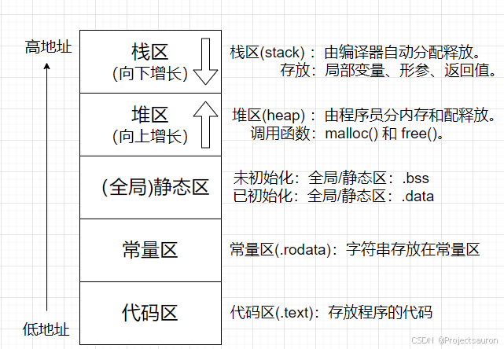
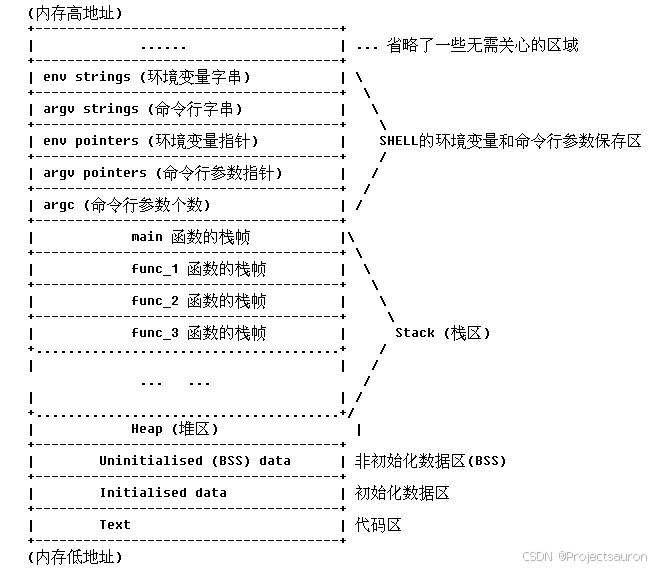
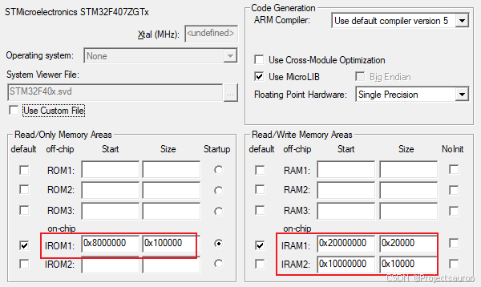
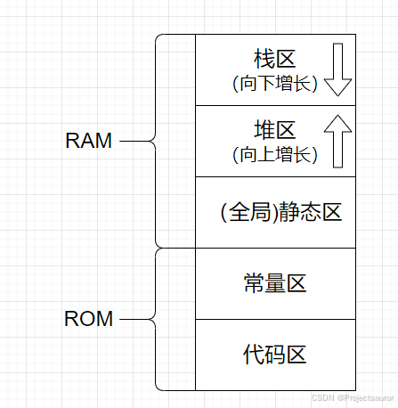
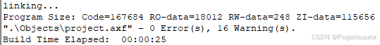
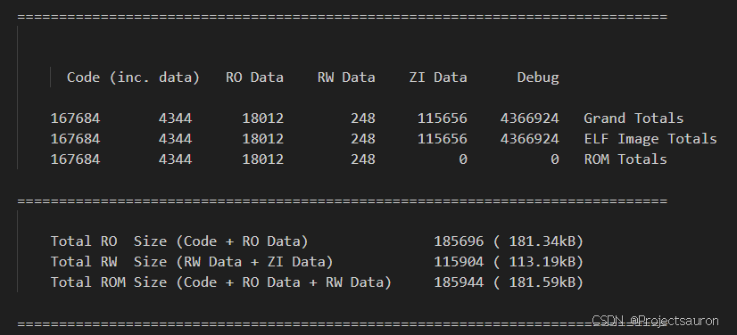
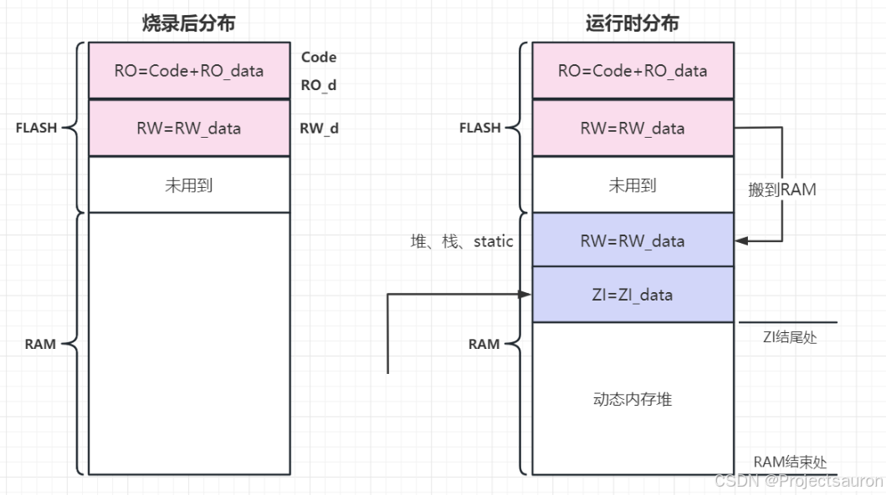
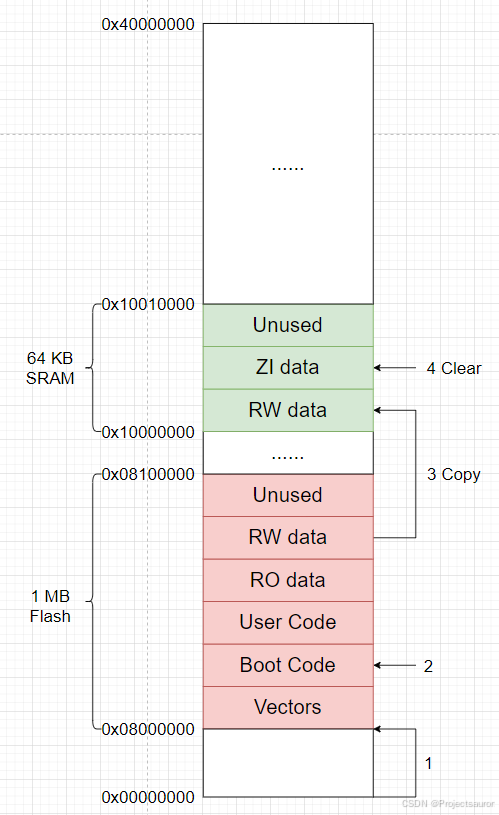

单片机内存区域划分
@toc
一、C 语言内存分区
C 语言在内存中一共分为如下几个区域，分别是：

下面分别介绍各个区域。
1、栈区
栈区介绍：
- 栈区由编译器自动分配释放，由操作系统自动管理，无须手动管理。
- 栈区由编译器自动分配释放，由操作系统自动管理，无须手动管理。
- 栈区上的内容只在函数范围内存在，当函数运行结束，这些内容也会自动被销毁。
- 栈区按内存地址由高到低方向生长，其最大大小由==编译==时确定，速度快，但自由性差，最大空间不大。
- 栈区是先进后出原则（LIFO），其操作方式数据结构中的栈是一样的。
存放内容：
- 临时创建的==局部变量==存放在栈区。
- 函数调用时，其==入口参数==存放在栈区。
- 函数返回时，其==返回值==存放在栈区。
- ==const 定义的局部变量==存放在栈区。
栈的大小是有限的，通常 Visual C++ 编译器的默认栈的大小为 1MB，所以不要定义
int a[1000000]这样的超大数组。
2、堆区
- 堆区按内存地址由低到高方向生长，其大小由系统内存/虚拟内存上限决定，速度较慢，但自由性大，可用空间大。
- 堆区用于存放程序运行中被动态分布的内存段，可增可减。
- 可以有 malloc 等函数实现动态分布内存，不过它的存储空间一般是不连续的，所以会产生内存碎片。
- 有 malloc 函数分布的内存，必须用 free 进行内存释放，否则会造成内存泄漏。
- 注意它与数据结构中的堆是两回事，不过分配方式类似于链表。
1 | char* p = new char[20]; |
3、全局区（静态区）
全局区由 .bss 段和 .data 段组成，可读可写。
通常是用于那些在==编译期间==就能确定存储大小的变量的存储区，但它用于的是在整个程序运行期间都可见的全局变量和静态变量。
.bss 段——未初始化- 未初始化的全局变量和未初始化的静态变量存放在
.bss段。 - 初始化为 0 的全局变量和初始化为0的静态变量存放在
.bss段。 .bss段不占用可执行文件空间，其内容由操作系统初始化。
- 未初始化的全局变量和未初始化的静态变量存放在
.data段——已初始化- 已初始化的全局变量存放在
.data段。 - 已初始化的静态变量存放在
.data段。 .data段占用可执行文件空间，其内容由程序初始化。
- 已初始化的全局变量存放在
注意，
.bss段只占==运行时的内存空间==而不占文件空间。在程序运行的整个周期内，.bss段的数据一直存在
4、常量区
同样，常量区也是用于那些在==编译期间==就能确定存储大小的常量的存储区，并且在程序运行期间，存储区内的常量是全局可见的。这是一块比较特殊的存储去，他们里面存放的是常量，不允许被修改。
- ==字符串==、==数字==等常量存放在常量区。
- ==const 修饰的全局变量==存放在常量区。
- 程序运行期间，常量区的内容不可以被修改。
常量数据段叫做 .rodata，即 read only，表示常量数据是不可修改的。一旦程序中对其修改将会出现段错误：
- 程序中的常量不一定就放在
.rodata中，有的立即数和指令编码放在.text中 - 对于字符串常量，若程序中存在重复的字符串，编译器会保证只存在一个
.rodata是在多个进程间共享的- 有的嵌入式系统，
.rodata放在 ROM（或者 NOR FLASH）中，运行时直接读取无需加载至 RAM。想要将数据放在.rodata只需要加上 const 属性修饰即可。
5、代码区
- 程序执行代码存放在代码区，其值不能修改（若修改则会出现错误）。
- 字符串常量和 define 定义的常量也有可能存放在代码区。
6、总结
下面已一段代码来看一下各部分存储：
1 |
|
注意：静态局部变量和静态全局变量
属于静态存储方式的量不一定就是静态变量。
例如：全局变量虽属于静态存储方式，但不一定是静态变量，必须由 static 加以定义后才能成为静态外部变量，或称静态全局变量。
- 把局部变量改变为静态变量后是改变了它的存储方式，即改变了它的生存期。
- 把全局变量改变为静态变量后是改变了它的作用域，限制了它的使用范围。
假设现在有一个程序，它的函数调用顺序如下：
main(...) -> func_1(...) -> func_2(...) -> func_3(...)，即：主函数 main 调用函数 func_1; 函数 func_1 调用函数 func_2; 函数 func_2 调用函数 func_3。
当一个程序被操作系统调入内存运行, 其对应的进程在内存中的映射如下图所示：

二、单片机存储分配
首先来看一下 RAM 和 ROM、Flash Memory 的物理特性。
1、存储器
1.1 RAM
RAM 是与 CPU 直接交换数据的内部存储器，也叫主存（内存）。它可以随时读写，而且速度很快，通常作为操作系统或其他正在运行中的程序的临时数据存储媒介。
RAM 又称随机存取存储器，存储的内容可通过指令随机读写访问。RAM 中的存储的数据在==掉电是会丢失==，因而只能在开机运行时存储数据。其中 RAM 又可以分为两种：
- 一种是
Dynamic RAM（DRAM，动态随机存储器） - 另一种是
Static RAM（SRAM，静态随机存储器）。
1.2 ROM
ROM 又称只读存储器，只能从里面读出数据而不能任意写入数据。ROM 与 RAM 相比，具有读写速度慢的缺点。但由于其具有==掉电后数据可保持不变==的优点，因此常用也存放一次性写入的程序和数据，比如主版的 BIOS 程序的芯片就是 ROM 存储器。
1.3 Flash Memory
由于 ROM 具有不易更改的特性，后面就发展了 Flash Memory。Flash Memory 不仅具有 ROM 掉电不丢失数据的特点，又可以在需要的时候对数据进行更改，不过价格比 ROM 要高。
1.4 不同数据的存放位置
由前面的分析我们知道，代码区和常量区的内容是不允许被修改的，ROM（STM32 就是 Flash Memory）也是不允许被修改的，所以代码区和常量区的内容编译后存储在 ROM 中。
而栈、堆、全局区（.bss段、.data段）都是存放在 RAM 中。
以 STM32F407 芯片为例：

- ROM 区域是
0x8000000开始，大小是0x10000，这片区域是只读区域，不可修改，存放代码区和常量区。 - 第一个 RAM 区域是
0x20000000开始，大小是0x2000，这片区域是可读写区域，存放的是全局(静态)区、堆区和栈区。

2、程序占用内存大小
下面是 Keil 的 Build Output 窗口：

如上图，存在 Code、RO-data、RW-data、ZI-data 四个代码段大小。
Code：代码，也就是编译之后产生的机器指令。RO_data：Read Only data，只读数据域，指程序中用到的只读数据，这些数据被存储在 ROM 区，因而程序不能修改其内容。这部分在程序运行过程中不能被更改，因此在运行时只需要来读取即可，无需占用 RAM 空间。RW_data：Read Write data，可读写数据域，指初始化为“非 0 值”的可读写数据，程序刚运行时，这些数据具有非 0 的初始值，且运行的时候它们会常驻在 RAM 区，因而应用程序可以修改其内容。ZI_data：Zero Initialie data，即 0 初始化数据，它指初始化为“0 值”的可读写数据域。它与RW-data的区别是程序刚运行时这些数据初始值全都为 0，而后续运行过程与RW-data的性质一样，它们也常驻在 RAM 区，因而应用程序可以更改其内容。
从生成的 map 文件可以非常方便地看到相关信息：

$$
RAM = RW-data + ZI-data \
ROM = Code + RO-data + RW-data
$$
可以看到：对于 RAM 的空间，程序启动时首先需要把 Flash 中的 RW_data（RW）复制到 RAM 中，然后把 ZI_data 加载到 RAM中。

对应到具体的内存上，结合启动流程如下图所示。

因此，想要让一个程序正常运行。
- 芯片的 Flash 大小 要大于 $Code + RO-data + RW-data$ 的大小；
- 芯片的 RAM 大小 要大于 $RW-data + ZI_data$ 的大小。
在MDK中（其实是
ARM Compiler中），默认情况下，所有尺寸小于 8 个字节、本应放在.bss段的ZI Data，都会被作为普通 RW Data 放在 “.bss” 段——之所以这么做是因为编译器觉得：通过循环赋值的方法给这帮小变量初始化成 0 太不划算了，初始化他们的程序都比变量本身还大呢，干脆放几个 0 到 RW 的初始值表里，由 RW 数据的初始化程序顺手处理好了——说了这么多，如果不好理解，简单理解成出于优化的目的就行了。
要想关闭这个优化，在命令行中加入“--bss_threshold=0” 就可以了。顺便说下，默认设置相当于“--bss_threshold=8”。.data section和.bss section是两个默认的 section，我们还可以定义自己的 section，并自己指定将哪些变量放到里面。具体怎么实现，请查阅对应编译器的使用手册。记住：==变量和代码都是放在段里面的，段具体放在哪里（什么地址上）则是由 linker 的脚本控制的==。
在 MDK 中（也就是ARM Compiler中），这个脚本叫做scatter-loading file；在 IAR 和 GCC 也有对应的LinkerScript，只不过语法规则不同，感兴趣的人可以查阅对应的手册。